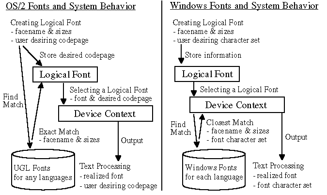

Understanding Differences between OS/2 Fonts and Windows Fonts
OS/2 Fonts and System Behavior
An OS/2 font covers in many cases more than one language. The font contains unified set of glyphs for several languages. This type of font is called Universal Glyph List (UGL) font. The UGL font contains zero as Codepage Id in the font metrics. The font other than UGL contains specific codepage id to indicate for which language it is expected to be used.
In OS/2, selecting a font and selecting an output language are done in
separate steps. When a logical font is created, the system realizes a font
of specified facename and sizes, by finding an exact match from the installed
typefaces. Failing to find an exact match falls directly into the System
Default Font. In this step, the codepage specified by application in the
logical font is just ignored. Later when the logical font is selected into
a device context, the system decides an output language from the codepage
that was specified in the logical font, and associates it with the font
that was realized before. In the case that the font was an UGL font, in
this step the system does not take care of if there are some missing glyphs
in the font when it is used for the decided language. The code points for
missing glyphs are just substituted by the Default Character (in many cases
it is single byte space) defined in that font.
Windows Fonts and System Behavior
Different from OS/2 UGL fonts, each Windows font covers one specific language (or group of languages). The Character Set Id is specified in the font metrics to indicate for which language the font is expected to be used. Also the font for different language has different facename qualifier or different scriptname when it is enumerated.
In Windows platforms, selecting a font and selecting an output language are done at once. When a logical font is selected into a device context, the system realizes a font of specified character set, facename and sizes, by finding the closest match from the installed typefaces with the help of system built-in Font Mapper. Because the font mapper treats the character set as the most significant attribute, failing to find an exact match falls to a font of same character set with (possibly) different visual properties. Then the system decides an output language from the character set specified in the realized font.
The following figure outlines the differences between OS/2 fonts and Windows fonts. 